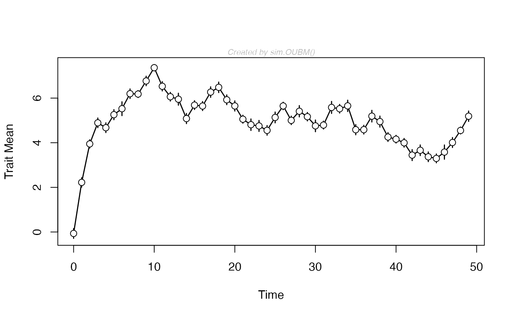

Simulate an Ornstein-Uhlenbeck process with optimum changing according to an unbiased random walk
sim.OUBM.RdFunction to simulate an Ornstein-Uhlenbeck evolutionary sequence data set with an optimum moving according to an unbiased random walk.
Usage
sim.OUBM(
ns = 20,
anc = 0,
theta.0 = 0,
alpha = 0.3,
vstep.trait = 0.1,
vstep.opt = 0.1,
vp = 1,
nn = rep(20, ns),
tt = 0:(ns - 1)
)Arguments
- ns
number of samples in time-series
- anc
the ancestral trait values
- theta.0
the ancestral value for the optimum
- alpha
strength of attraction to the optimum
- vstep.trait
step variance of the trait
- vstep.opt
step variance of the optimum
- vp
phenotypic variance of each sample
- nn
vector of the number of individuals in each sample (identical sample sizes for all time-series is assumed)
- tt
vector of sample times (ages
Examples
##Simulate data
x<-sim.OUBM(50, theta.0 = 5, alpha = 0.6, vstep.opt = 0.5)
## plot the data
plot(x)
